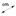
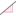

AffineRatio[Point A, Point B, Point C]: Returns the affine ratio λ of three collinear points A, B, and C, where C = A + λ * AB.
Area[Point A, Point B, Point C, ...]: Calculates the area of the polygon defined by the given points A, B, C,…
Area[Conic c]: Calculates the area of a conic section c (circle or ellipse).
Note:
· In order to calculate the area between two function graphs, you need to use the command Integral.
· Also see tool Area
AxisStepX[]: Returns the current step width for the x-axis.
AxisStepY[]: Returns the current step width for the y-axis.
Note: Together with the Corner and Sequence commands, the AxisStep commands allow you to create custom axes (also see section Customizing Coordinate Axes and Grid).
BinomialCoefficient[Number
n, Number r]: Calculates the binomial coefficient
n choose r.
Circumference[Conic]: Returns the circumference of a circle or ellipse.
CrossRatio[Point
A, Point B, Point C, Point D]: Calculates the cross ratio λ of four collinear points A, B,
C, and D, where
λ = AffineRatio[B, C, D] /
AffineRatio[A, C, D].
Curvature[Point, Function]: Calculates the curvature of the function in the given point.
Curvature[Point,
Curve]: Calculates the curvature of the curve in the given point.
Distance[Point A, Point B]: Yields the distance of two points A and B.
Distance[Point, Line]: Yields the distance of the point and the line.
Distance[Line
g, Line h]: Yields the distance of the parallel lines g and h.
Note: The distance of intersecting lines
is 0. Thus, this command is only interesting for parallel lines.
Note: Also see tool  Distance or Length
UK English: HCF
GCD[Number a, Number b]: Calculates the greatest common divisor of numbers a and b (UK-English: HCF = highest common factor).
GCD[List of Numbers]: Calculates the greatest common divisor of the list of numbers (UK-English: HCF = highest common factor).
Div[Number a, Number b]: Calculates the integer quotient for division of number a by number b.
Integral[Function,
Number a, Number b]: Returns the definite integral of the function in the
interval [a , b].
Note: This command also draws the area
between the function graph of f and
the x-axis.
Integral[Function
f, Function g, Number a, Number b]: Yields the definite integral
of the difference f(x) - g(x) in the
interval [a, b].
Note: This command also draws the area
between the function graphs of f and g.
Note: Also see command for Indefinite Integral
Iteration[Function,
Number x0, Number n]: Iterates the function n times using the given start value x0.
Example: After defining f(x) = x^2 the command Iteration[f, 3, 2] gives
you the result (32)2 = 81.
LCM[Number a, Number b]: Calculates the least common multiple of two numbers a and b (UK English: LCM = lowest common multiple).
LCM[List of numbers]: Calculates the least common multiple of the elements of the list (UK English: LCM = lowest common multiple).
Length[Vector]: Yields the length of the vector.
Length[Point A]: Yields the length of the position vector of the given point .
Length[Function, Number x1, Number x2]: Yields the length of the function graph in the interval [x1, x2].
Length[Function,
Point A, Point B]: Yields the length of the function graph between
the two points A and B.
Note: If the given points do not lie on the
function graph, their x-coordinates
are used to determine the interval.
Length[Curve, Number t1, Number t2]: Yields the length of the curve between the parameter values t1 and t2.
Length[Curve c, Point A, Point B]: Yields the length of curve c between two points A and B that lie on the curve.
Length[List]: Yields the length of the list which is the number of elements in the list.
Note: Also see tool Distance or Length
LinearEccentricity[Conic]:
Calculates the linear eccentricity of the conic section.
Note: The linear eccentricity is the distance
between a conic's center and its focus, or one of its two foci.
LowerSum[Function,
Number a, Number b, Number n]: Yields the lower sum of the given function
on the interval [a, b] with n rectangles.
Note: This command draws the rectangles for
the lower sum as well.
Min[Number a, Number b]: Yields the minimum of the given numbers a and b.
Max[Number a, Number b]: Yields the maximum of the given numbers a and b.
Mod[Integer a, Integer b]: Yields the remainder when integer a is divided by integer b.
Parameter[Parabola]: Returns the parameter of the parabola, which is the distance of directrix and focus.
Perimeter[Polygon]: Returns the perimeter of the polygon.
Radius[Circle]: Returns the radius of the circle.
RandomBetween[Min Integer, Max Integer]: Generates a random integer between min and max (inclusive).
RandomBinomial[Number n of Trials, Probability p]: Generates a random number from a binomial distribution with n trials and probability p.
RandomNormal[Mean, Standard Deviation]: Generates a random number from a normal distribution with given mean and standard deviation.
RandomPoisson[Mean]: Generates a random number from a Poisson distribution with given mean.
SemiMajorAxisLength[Conic]:
Returns the length of the semimajor axis (half of the major axis) of the conic
section.
SemiMinorAxisLength[Conic]:
Returns the length of the semiminor axis (half of the minor axis) of the conic
section.
Slope[Line]:
Returns the slope of the given line.
Note: This command also draws the slope
triangle whose size may be changed on tab Style
of the Properties
Dialog.
Note: Also see tool  Slope
UK English: TrapeziumSum
TrapezoidalSum[Function,
Number a, Number b, Number n]: Calculates the trapezoidal sum of
the function in the interval [a, b]
using n trapezoids.
Note: This command draws the trapezoids of
the trapezoidal sum as well.
UpperSum[Function,
Number a, Number b, Number n]: Calculates the upper sum of the function
on the interval [a, b] using n rectangles.
Note: This command draws the rectangles of
the upper sum as well.